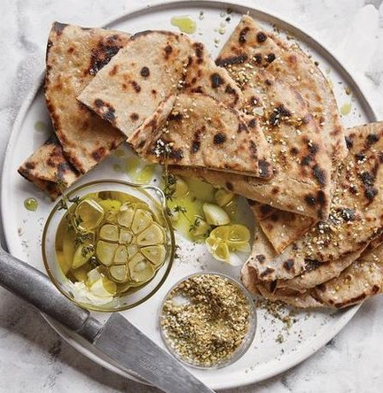
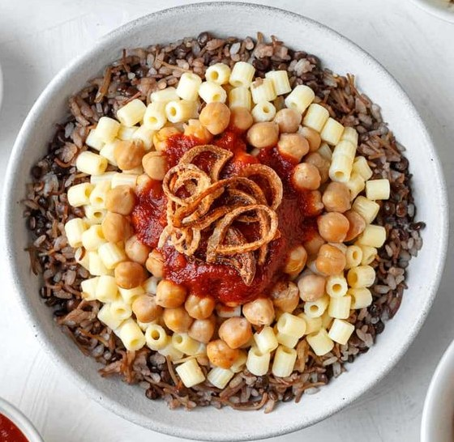
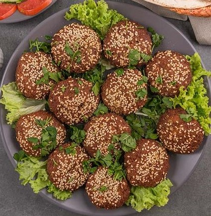
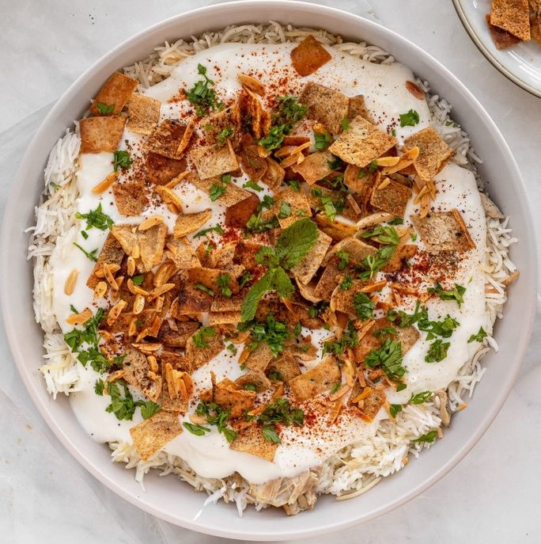
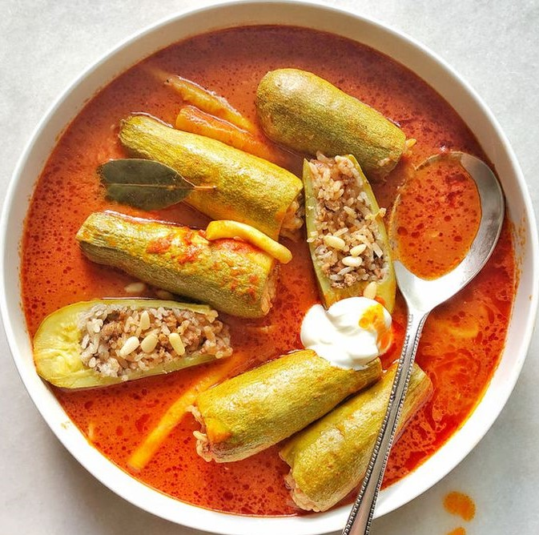
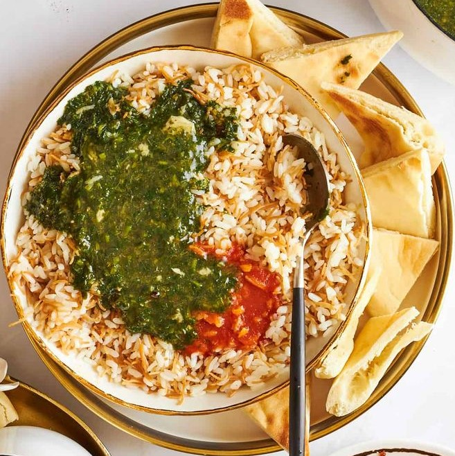

Breakfast Dishes

Ful Medames
Made from fava beans stewed with garlic, lemon juice, cumin, and olive oil, often garnished with parsley, tomatoes, and onions. It's a staple breakfast that is filling and nutritious.
Aish Baladi
Aish Baladi is a traditional Egyptian flatbread made from whole wheat flour, water, salt, and yeast, typically baked on a bed of bran for added texture.
Koshari Breakfast
Made with rice, lentils, pasta, chickpeas, and a spicy tomato sauce, and sometimes eaten for breakfast in smaller portions.
Ta'ameya
Made from crushed fava beans instead of chickpeas (as in the Levantine version), Egyptian falafel is green inside from fresh herbs like parsley and cilantro. It's usually served with bread, salad, and tahini sauce.
Main Dishes
Fattah
A layered dish of toasted bread, rice, and meat, topped with a garlicky tomato sauce, often served on special occasions.

Hamam Mahshi
Stuffed pigeon, filled with spiced rice or cracked wheat, then roasted or grilled for a flavorful main dish.
Mahshi
Vegetables like zucchini, eggplant, or grape leaves stuffed with a mixture of rice, herbs, and spices, sometimes with minced meat.
Molokhia
A green soup made from finely chopped jute leaves, flavored with garlic and coriander, and often served with rice and meat such as chicken or rabbit.